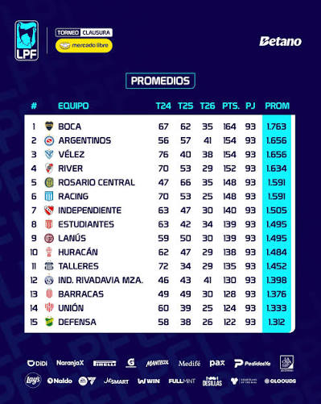

Resultados Y Estadisticas Futbol Argentino
Página web argentina dedicada a la información deportiva, principalmente de fútbol argentino. Ofrece resultados en vivo, partidos, tablas de posiciones, fixtures, estadísticas y noticias de diferentes ligas y torneos
- HTML
- CSS
- JS